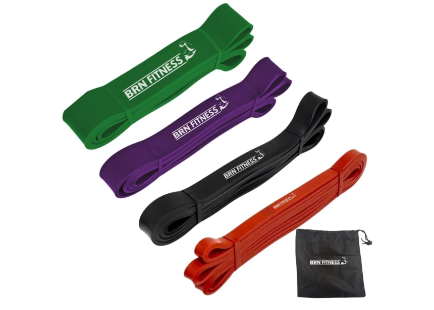

Let’s Gym Talk
Academia, ciência e motivação
Academia, ciência e motivação
Se você está começando na academia, um erro muito comum é tentar treinar como avançado. O iniciante precisa de adaptação, técnica e consistência.
Um dos melhores formatos para iniciantes é o treino 3x por semana, pois permite evolução sem excesso de fadiga.
Porque você consegue treinar o corpo inteiro com frequência e ainda descansar o suficiente. A recuperação é essencial para crescimento muscular.
Um treino ideal precisa trabalhar:
Faça este treino em dias alternados, por exemplo: Segunda, Quarta e Sexta.
Use um peso que te permita fazer as repetições com boa técnica. O ideal é terminar a série sentindo esforço, mas sem perder execução.
Para iniciantes:
Cardio não é obrigatório, mas é ótimo para saúde. Um iniciante pode fazer 15 a 25 minutos 2-3x por semana.
Treinar 3x por semana é uma estratégia excelente para iniciantes. O segredo é consistência e progressão gradual.
⚠️ Este artigo é educativo. Consulte um profissional se tiver dores, lesões ou condições médicas.
Leia também: Déficit calórico e Superávit calórico.
Alguns produtos podem ajudar na sua consistência e conforto.
Ajuda na pegada e reduz desconforto em puxadas e remadas.Luva Academia Masculino e Feminino - Grip Crossfit Antiderrapante, Luvas para Musculação com Protetor Palmar, Ideal para Treino, Academia e Exercícios - Inclui Estojo
Qualidade: ⭐⭐⭐⭐⭐
Uso: Use em treinos de costas se necessário.
Ver na Amazon
Excelente para aquecimento e mobilidade antes do treino.
Qualidade: ⭐⭐⭐⭐⭐
Uso: Use para ativação muscular e alongamento dinâmico.
Ver na Amazon